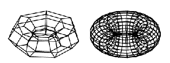

| |
Introduction To Rendering And Faceting |
| <<< Introduction To Graphic Support | Chapters | Rendering Functions >>> |
Visual representation of parts modelled in Parasolid is provided by the rendering and faceting functionality, which generates wire-frame and hidden-line pictures of bodies, faces and edges in the session.
These processes are introduced in this chapter.
The following chapters cover some concepts which are generally applicable to rendering and faceting:
Specific information on the PK functions which perform rendering and faceting is contained in further chapters as indicated in the text below.
|
|
Note: This volume provides information on how get a tessellated representation from Parasolid models (both classic and facet bodies). |
Rendering is the process of asking the modeller to produce graphical data representing a particular entity or set of entities. There are two functions which produce the following types of graphical data when rendering geometric and topological entities:
The differences in these types of output are explained in Chapter 105, “Rendering Functions”
In its simplest form, the graphical data consist of polyline, circular and elliptical line segments which approximate the surface boundaries and edge geometry of rendered entities. A user-supplied curve tolerance controls how closely the rendered data match the geometry of original model entities.
|
Note: Because the rendered data are calculated to curve tolerance accuracy and not to modeling accuracy, these data should not be used for modelling calculations. |
Options are available to generate additional geometric data such as face hatching, blend boundaries and silhouette lines.
There are other options which divide the rendered data into hidden and visible line segments and output additional data such as smoothness and regional classification values alongside the geometric GO data.
These options are described in general terms, using the categories listed in the above table, in Chapter 105, “Rendering Functions”. Detailed descriptions of the option structures are in Chapter 106, “Rendering Option Settings”
The term “faceting” describes the generation of an approximate representation of a part using a mesh of polygonal planar facets to represent its faces.
A user-supplied curve tolerance controls how closely the boundary of each face mesh matches the edge geometry of the face. A user-supplied surface tolerance controls how closely each face mesh matches the surface geometry of the face.
Further options are available which constrain the size and shape of facets in the mesh.
Figure 104-1 faceted representations of a toroidal body
PK_TOPOL_render_facet outputs facets through the Graphical Output (GO) interface, defining each facet as a closed polygon. It is passed an options structure, PK_TOPOL_render_facet_o_t, which contains two sub-structures, as follows:
PK_TOPOL_facet_2 returns a tabular representation of the facet topology of a part, together with associated geometric information, which defines the facet mesh in terms of connected facet, facet strip, fin and data indices.
PK_TOPOL_facet_2 is passed an options structure (PK_TOPOL_facet_2_o_t), which contains two sub-structures, as follows:
You specify how to construct the facet mesh in a similar way as for PK_TOPOL_render_facet, and you use PK_TOPOL_facet_choice_2_o_t to specify which types of faceting data your application requires, defining tables through which the facet topology, geometry and associated data can be returned.
Unlike PK_TOPOL_render_facet, faceting data is not output through the GO, but is returned to your application in the PK_TOPOL_facet_2_r_t. See Chapter 110, “Tabular Output Of Faceting” for more information.
You can control whether PK_TOPOL_render_line, PK_GEOM_render, PK_TOPOL_render_facet and PK_TOPOL_facet_2 run exclusively or concurrently in the current thread using the functions PK_THREAD_ask_function_run and PK_THREAD_set_function_run. If any of PK_TOPOL_render_line, PK_GEOM_render, PK_TOPOL_render_facet or PK_TOPOL_facet_2 are set to run concurrently, then calls to the function from different application threads can be executed simultaneously.
Depending on the configuration of the machine running Parasolid, and whether your application already uses Parasolid SMP, running these functions concurrently can improve faceting performance.
Graphical data are output when the PK rendering functions call registered “GO” functions (GOOPSG, GOSGMT and GOCLSG).
The application must capture this 3-dimensional data and use it to generate pictures on the screen or create hard copy output from it.
All GO data is defined in modeling coordinates. The application writer must implement a set of GO functions which first transform view-dependent and hidden-line data into the application’s viewing coordinate system.
The transformed data can be passed to a 3-dimensional rendering package or projected onto the application viewing screen using homogenous matrix techniques.
The selection of rendering options is governed by whether the application’s GO functions require such additional data. A minimal implementation of GO must be able to transform and display (or post-process) basic rendering data such as polylines and arc segments.
The GO implementation should be written so that it discounts rendering data which it does not understand and behaves sensibly if it does not always receive the additional rendering data. This allows a minimal implementation of GO to be enhanced at a later date and new rendering options to be introduced.
If your GO implementation has been written so that it is thread-safe, you can indicate this to Parasolid using the
go_thread_safe
option in PK_SESSION_register_fru_2. Where practical, we recommend a thread-safe GO implementation to allow your application to benefit from the full set of performance optimisations available in Parasolid.
|
Note: You should not call heavyweight functions from the GO. See Section 122.2.1, “State of the code in execution” for more information on heavyweight functions. See the Function Exclusivity list in the PK Interface Programming Reference Manual to find out if a function is heavyweight or lightweight. |
The format of GO data is described in the Parasolid Downward Interfaces manual in the following places:
| <<< Introduction To Graphic Support | Chapters | Rendering Functions >>> |